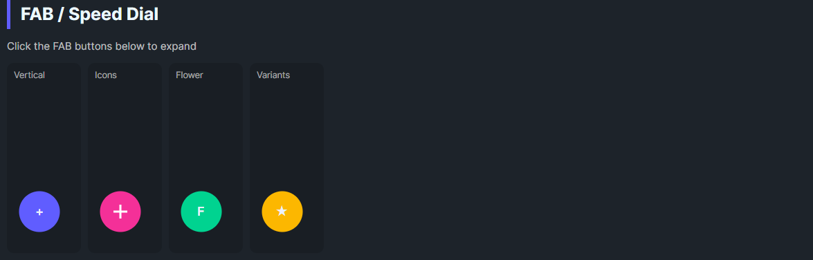

DaisyFab is a Floating Action Button container with a trigger button and expandable action buttons. It supports Vertical, Horizontal, or Flower layouts, auto-closes when an action is clicked, and lets you customize trigger content, size, and variant. Ideal for exposing a small set of secondary actions from a single FAB.
| Property | Description |
|---|---|
Layout |
Vertical (default) stacks actions above trigger; Horizontal places actions to the left of trigger; Flower uses larger spacing. |
IsOpen |
Toggles visibility of action buttons. Trigger click flips this. |
AutoClose (default True) |
Clicking an action button closes the menu automatically. |
| Property | Description |
|---|---|
TriggerVariant |
DaisyButton variant for the trigger (default Primary). |
TriggerContent |
Text or simple content for the trigger (default "+"). |
TriggerIconData |
Path data string for the trigger icon (recommended for icons). |
TriggerIconSize |
Size of the trigger icon in pixels (default 16). |
| Property | Description |
|---|---|
Size |
Controls the size of both the trigger and all action buttons (ExtraSmall through ExtraLarge). |
The FAB automatically propagates its Size to all child action buttons. You don't need to set Size on individual action buttons—they inherit from the parent FAB.
FlowerySizeManager.CurrentSize changes. When the global size changes, the FAB and all its action buttons update automatically (unless FlowerySizeManager.IgnoreGlobalSize is set).
<!-- Vertical FAB (default) - actions appear above trigger -->
<daisy:DaisyFab TriggerContent="+" TriggerVariant="Primary" Size="Medium">
<StackPanel>
<daisy:DaisyButton Shape="Circle" Content="A" />
<daisy:DaisyButton Shape="Circle" Content="B" />
<daisy:DaisyButton Shape="Circle" Content="C" />
</StackPanel>
</daisy:DaisyFab>
<!-- Horizontal FAB - actions appear to the left of trigger -->
<daisy:DaisyFab Layout="Horizontal" TriggerContent="+" TriggerVariant="Accent" Size="Medium"
HorizontalAlignment="Left" VerticalAlignment="Bottom">
<StackPanel>
<daisy:DaisyButton Shape="Circle" Content="1" />
<daisy:DaisyButton Shape="Circle" Content="2" />
<daisy:DaisyButton Shape="Circle" Content="3" />
</StackPanel>
</daisy:DaisyFab>
<!-- FAB with icon buttons (recommended pattern) -->
<daisy:DaisyFab TriggerVariant="Secondary" Size="Medium"
TriggerIconData="M12 4.5v15m7.5-7.5h-15">
<StackPanel>
<daisy:DaisyButton Shape="Circle"
IconData="M3 9.5l9-7 9 7V20a1 1 0 0 1-1 1h-5v-6H9v6H4a1 1 0 0 1-1-1V9.5z" />
<daisy:DaisyButton Shape="Circle"
IconData="M12 15.5A3.5 3.5 0 1 0 12 8.5a3.5 3.5 0 0 0 0 7z..." />
</StackPanel>
</daisy:DaisyFab>For icons that scale with the FAB size, use the IconData property on action buttons instead of placing a PathIcon as content:
<!-- ✅ Recommended: IconData auto-scales with Size -->
<daisy:DaisyButton Shape="Circle" IconData="M12 4.5v15m7.5-7.5h-15" />
<!-- ❌ Avoid: Fixed-size PathIcon won't scale -->
<daisy:DaisyButton Shape="Circle">
<PathIcon Width="16" Height="16" Data="..." />
</daisy:DaisyButton>| Layout | Actions Position | Grid Structure |
|---|---|---|
Vertical |
Above trigger | Row-based (actions Row 0, trigger Row 1) |
Horizontal |
Left of trigger | Column-based (actions Column 0, trigger Column 1) |
Flower |
Above trigger with larger spacing | Row-based with 12px spacing |
AutoClose="False" if actions open modal flows and you want the menu to stay open.TriggerIconData for the trigger icon and IconData for action button icons—both auto-scale with Size.HorizontalAlignment="Left" since actions expand leftward.